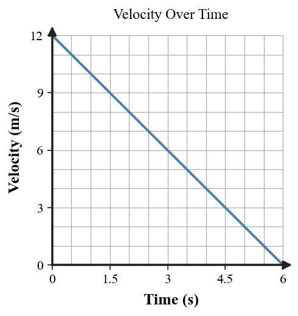

State what the length of a velocity-vector arrow represents.
State what the direction of a velocity-vector arrow represents.
Classify the motion-dot diagram with equal spacing as constant speed, speeding up, or slowing down.
Classify the motion-dot diagram with increasing spacing.
Classify the motion-dot diagram with decreasing spacing.
Which vector sequence shows speeding up while moving in one direction?
Which vector sequence shows slowing down while moving in one direction?
Which vector sequence shows a change in direction at roughly constant speed?
On a distance-time graph, what does increasing steepness usually indicate?

On a velocity-time graph, what does an upward straight line indicate?

On a velocity-time graph, what does a downward line toward zero indicate?

A motion model includes positions recorded at unequal time intervals. Why does that make dot spacing harder to interpret?